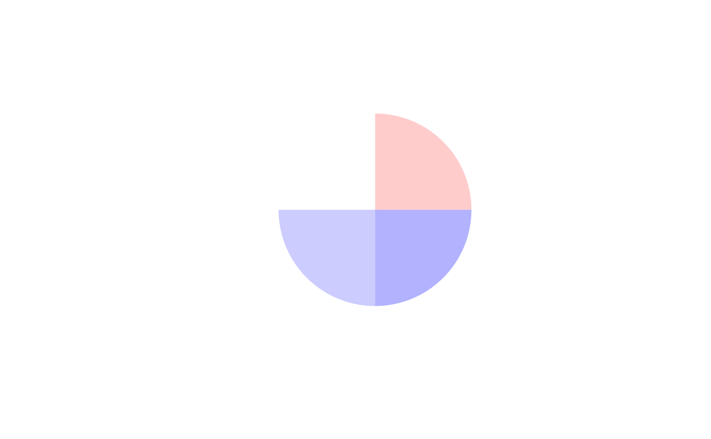

colorify map for gradient coloring using grDevices::colorRamp, inspired by circlize::colorRamp2.
Note that colors_map and colors will be ordered ascendingly by colors_map values.
Usage
colorify_map(colors, colors_map, ...)
Arguments
- colors
hexcolor character vector
- colors_map
numeric vector matching colors per value
- ...
to pass arguments to grDevices::colorRamp
Value
function with colors and breaks attributes, can be called as function(c(values)) to return hexcolorcodes
See also
Browse vignettes with vignette("Introduction to coloRify")
Examples
map_f <- colorify:::colorify_map(colors = c("white", "blue", "red"), colors_map = c(0, 10, -5))
colorify(colors=map_f(c(-1,0,2,3)), plot=T)

#> [1] "#FFCCCCFF" "#FFFFFFFF" "#CCCCFFFF" "#B2B2FFFF"